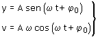
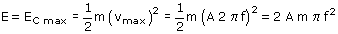

El período es la inversa de la frecuencia: T = 1/f . Entonces si la frecuencia se reduce a la mitad el período se duplicará Ecuaciones del movimiento armónico:  La velocidad máxima es: vmax = Aω = A·2π·f, luego esta velocidad se reducirá a la mitad si se reduce la frecuencia a la mitad La energía total es la suma de las energías cinética y potencial elástica en cualquier posición. En la posición de equilibrio la energía elástica es cero y la energía cinética es la correspondiente a la velocidad máxima:  Si la frecuencia se reduce a la mitad la energía de oscilación se reducirá a la cuarta parte: (1/2)2 |